← 返回阅读库 · 原论文目录
论文讲解阅读文档 · 多模态语言模型 · v021
End-to-End Learning of Visual Representations from Uncurated Instructional Videos
视频时长 00:08:58；讲解文字 4,167 字符；提取讲解画面 20 张。按视频原顺序阅读，每段文字保留时间戳。
文字来自整段视频的自动语音转写，按自然停顿分段，并与 PPT / 论文页面 / 演示画面对齐。未将讲解压缩为摘要；术语、数字和口述公式请结合画面及原论文核对。 阅读稿已校正规范部分明确术语误识别；原始逐字稿和每处修改记录另行保留。
讲解画面为源视频截图（640×360），不是可编辑 PPT 文件。全片按每秒 2 帧扫描内容变化，逐步展开页保留；连续动画保留代表画面。清晰度受源视频限制。
下载完整资料包 · 含离线 HTML、PDF、Word、全部 PPT 画面和字幕。
原论文与材料
End-to-End Learning of Visual Representations from Uncurated Instructional Videos · 下载完整 PDF（14 页）
按时间阅读
00:00:00–00:00:30 · 画面 001
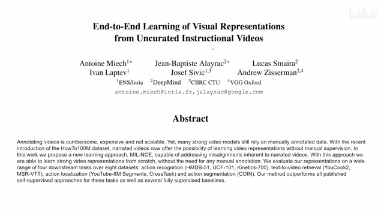
00:00:00–00:00:30 · 画面 001大家好啊 ，今天我们来快速说一篇论文 End-to-End Learning of Visual Representations from Uncurated Instructional Videos。这篇论文呢 ，是一个很经典的把这个 video 和它对应的文本相结合，然后呢 ，学一个好的共同的这个 representation 这么一个文章。但是呢 ，这篇文章重点关注的是这个 uncurated，也就是说我们的数据的质量并不高，很多的时候 video 和这个文本并不对应。
那我们来看作者的一个处理，那么首先我们想要学的就是一个 joint text video embedding。那在这个 embedding 或者叫一个 latent space 里面呢，假如说一个视频和一段话它们的内容是相对应的，那么我们希望它们在这个 latent space 里面这个距离够近，或者说叫相似度很高。
00:00:30–00:01:53 · 画面 002
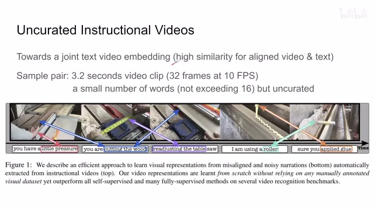
00:00:30–00:01:53 · 画面 002在这个文章里面作者用了 3.2 秒的 video clips 也就是 32 帧的一个 video clips 和它对应的一小串描述的话不会超过 16 个词希望通过这样的样本来进行训练但是正如这个例子所展示的一样这些文本和视频它们并不是准确的对应的比如说这里我说轻轻的按压这个木头啊可以没问题，那同时呢，他说我在切这个木头对吧？啊，那这个呢是对到这一幕了，跟这一幕并不对应。那这是一个对应的问题对吧？还有这种啊，总之就是你在视频里面看到的东西和你说话并不是总是百分百对应的。那这就导致你不能直接的拿来这个样本他这个对应就拿来用对吧？这样是不可以的。
但是呢，我们在这里呢可以先抛开这个问题不谈，我们来先看看假设说这个 video 和这个 text 他们是好好对应的，那我们怎么做处理呢？那这里呢，作者使用的是这个 nce 啊，他的原理很简单，就是你可以看到我的输入包括 x 这个是 video clipy 呢就是对应的这个文本啊，然后呢，f 和 g 就是他的这个 embedding 吧，把他们 embedding 提出来。那这个时候呢，我把这个两个 embedding 直接乘起来。
00:01:53–00:03:53 · 画面 003
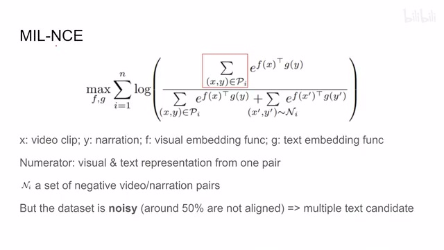
00:01:53–00:03:53 · 画面 003就是得到一个相似度，然后呢放到指数上。那这里这个求和的符号呢我们先不管它，我们只需要知道它的分子上是这个 positive sample，也就是也就是这个 xy 这个视频和文本是对应的，它的分母上是这个 positive sample 视频和文本对应加上 negative sample 不对应的情况下这个相似度。那么这个东西套上 log。
然后我们要使它最大化，也就使得我们对应的样本 positive sample 它的这个相似度得到提高，那这些 negative sample 这些不匹配的这些样本它的相似度降低。那么这个是一个经典的 NCE 的构型啊，就是 noise contrastive estimation，因为我们不只希望我们的 positive sample 它的这个信号它的 similarity 足够强，同时呢它要比一些随机挑选出来这个 negative sample 它的相似度要高。
这个是 NCE，那还是正如我们之前所说的这个样本呢，它是噪声是很大的，我们有大约 50%的样本它的这个文本和视频并没有一一的对应。那这里的作者解决思路呢就是我不止有一个这个 video 和这个 text。这样一个 pair，我可以用很多个，只要我觉得它们可能相似，那我都给它用起来。所以呢，这时候我们回到之前忽略的这个求和上，也就是说我们这个分子的位置上不止只有一个这个 xy 这个 pair，我其实有很多个这个 xy 这个 pair，然后把它们加起来，它们都是 positive sample。那同样的这个分子要复制到这个分母栏啊。
但是它核心的思想就是我有很多个 positive sample，因此你可以看到这一张的标题其实叫做 MIL-NCE，也就是 Multiple Instance Learning Noise Contrastive Estimation。那么这个是本文使用的 MIL-NCE。那么下面的问题就是我知道这个 video 和这个 text 它的严格对应的 positive 是谁，但是我们如何获得更多的 positive 呢？这里做着使用的方法非常简单。
00:03:53–00:03:58 · 画面 004
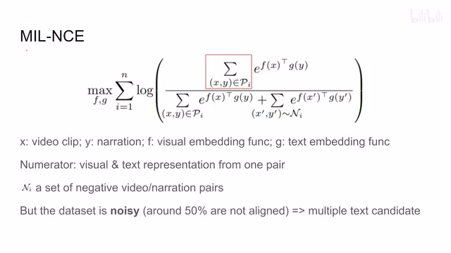
00:03:53–00:03:58 · 画面 00400:03:58–00:03:59 · 画面 005
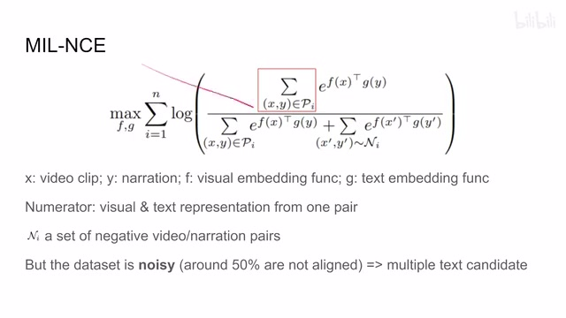
00:03:58–00:03:59 · 画面 00500:03:59–00:04:12 · 画面 006
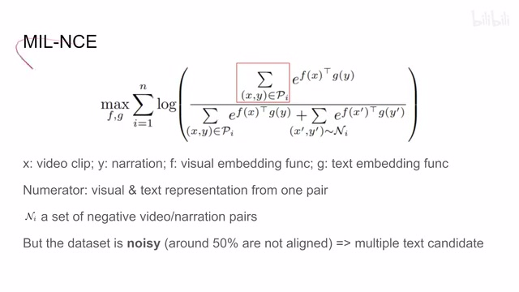
00:03:59–00:04:12 · 画面 00600:04:12–00:05:25 · 画面 007
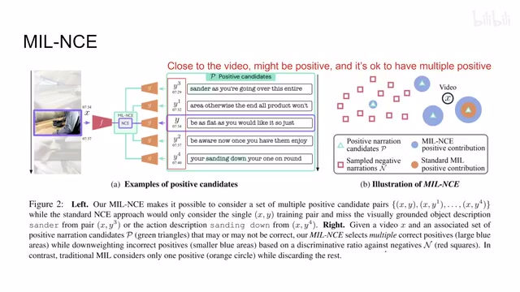
00:04:12–00:05:25 · 画面 007就是我们来看到这个视频比如说它是在这个 7 分 34 秒到 7 分 37 秒之间的 OK，我们 7 分 34 秒这个字幕肯定是严格对应的，但是呢，在它的上下文离这个视频位置不远的地方，作者认为这些字幕都可以被认为是 positive sample。那所以呢，实际在计算 loss 的时候，这个 multi instance 在哪里呢？第一个 instance 肯定是 x 和这个 y 嘛，它对应嘛。那其他的 instance 包括 x 和 y1x 和 y2 这样子的对应关系，它们都算是 positive sample。那么这个呢，就是 multiple instance learning。那么这边一个图更直观一点对吧？我们的 video 的 representation 在这里，我们剩下的这些位置都是这个 text embedding。那么你可以看到这里有四个 text 都被
标上了这个 positive。那说明他们和这个 video 在时序上是很接近的。那在这个 MIL-NCE 里面，他们都是 positive。那么这个是本文提出的方法。那这里呢，作者对比了标准的 MIL，这个比如说 MIL-SVM。这里呢，只选择了一个这个 positive sample，剩下的这些 positive sample 就都被丢掉。那么下面呢，我们来看作者的一些实验
00:05:25–00:05:39 · 画面 008
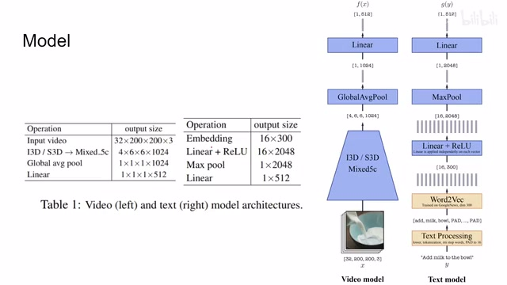
00:05:25–00:05:39 · 画面 008首先是作者使用的模型，在这个视频的这个 embedding 上面用的是这个 I3D 或者是 S3D 都有。然后这个文本的处理呢，就是这个 word2vec。然后最终他们都被投影成这个 512 长度这个 representation。这个是他的这个模型的结构。那么我们首先来看一下 ablations。那使用的任务呢，都是 action recognition。那首先来看不同的这个 loss
00:05:39–00:05:40 · 画面 009
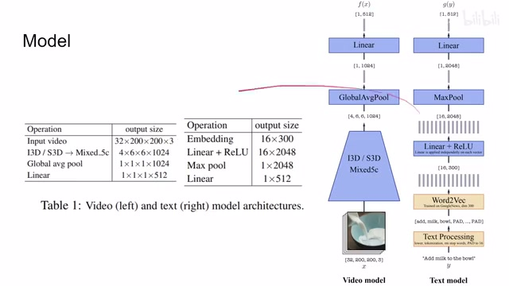
00:05:39–00:05:40 · 画面 00900:05:40–00:05:42 · 画面 010
00:05:40–00:05:42 · 画面 01000:05:42–00:06:17 · 画面 011
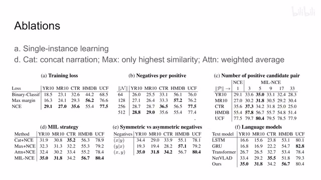
00:05:42–00:06:17 · 画面 011NCE 其实作为一种 contrastive loss，当然我们也有很多其他的选择。比如说用一个 classifier 来判断两个是 positive sample 还是 negative sample。比如说用 max margin，也就是我希望我的 positive 比 negative 多出这么一个阈值，否则就要开始算 loss。可以看到 NCE 的效果是很好的。注意这些，它们都是只用了一个 positive sample，因为这些东西它们只兼容一个 positive sample
00:06:17–00:06:18 · 画面 012
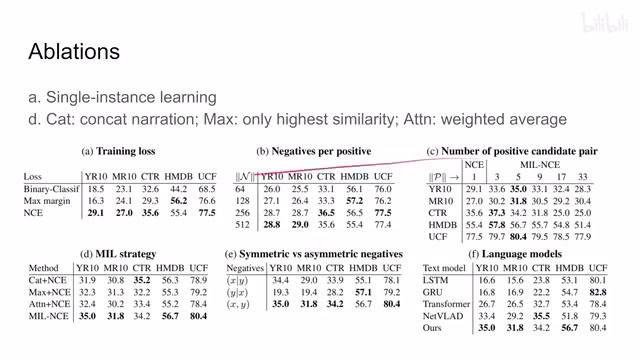
00:06:17–00:06:18 · 画面 012那很直接的，我们就来到这个 C 组这个实验。这里对比的就是我们选多少个 positive sample 合适。那比如说这个一个的，它就落回这个 NCE 了嘛，就是这一组数据。然后呢，增加这个 positive 的数量，然后在不同的数据集上有不同的实践。那除了 positive sample 当然对吧，我们 negative sample 也是很重要的一般的一个趋势来讲，是这个 negative sample 越多效果越好，这个都没问题。那么再往下比较有意思的就是 MIL 的这个策略
00:06:18–00:06:36 · 画面 013
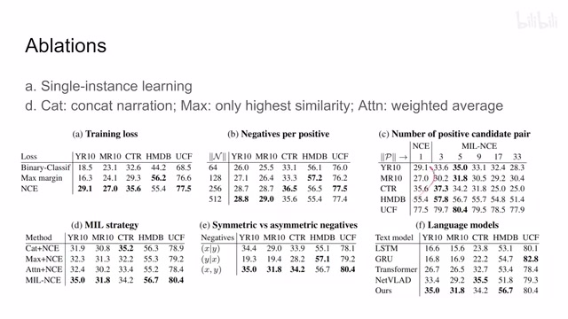
00:06:18–00:06:36 · 画面 01300:06:36–00:06:37 · 画面 014
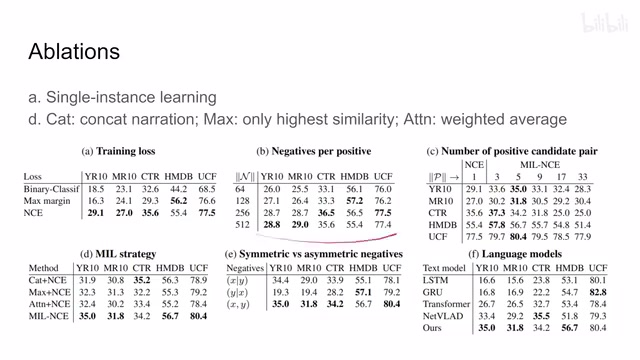
00:06:36–00:06:37 · 画面 01400:06:37–00:06:55 · 画面 015
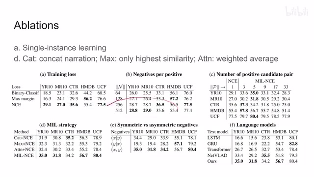
00:06:37–00:06:55 · 画面 015那这个标准 MIL 就是每一组这个 positive sample 算出来，然后大家直接求和吗？就结束了。那当然比如说这个 concatenation 这个 cat 这个东西，他就是把所有文字 representation 串接起来，然后和我们的这个 video 的 representation 啊做一个 similarity。所以 cat 加 nce 它只有一个 positive sample
00:06:55–00:08:09 · 画面 016
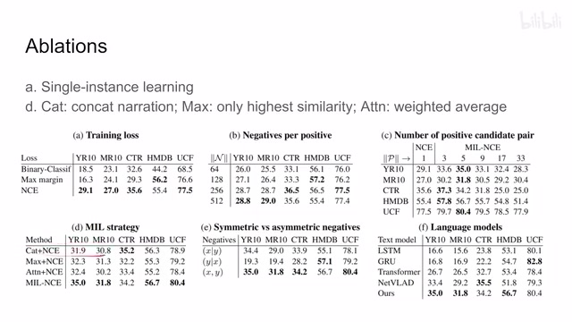
00:06:55–00:08:09 · 画面 016那类似呢，这个 max 就是做了 max pooling。就是我现在有很多个 pair 嘛，对吧？我一个视频跟很多个文字都算这个 similarity，我选择 similarity 最大的一个组合作为我们实际使用的这个组合。所以它也是只有一个 positive sample。那么这个 attention 加 nce 稍微复杂了一点，它就是算了一个我们的 video representation 和 text representation 之间的一个 cross attention。那么当然它本质就是一个加权和嘛
感兴趣的朋友呢，可以在附录查看它具体的实现。那么这边呢，就是一个对称和非对称的这个 negative 的问题。比如说这个地方是 given y，也就是我固定了一个 text，然后我去抓不同的这个 video，那这样他们来构成 negative sample。那这边同理就是我固定这个 video x，我去抓不同的这个 text 啊，他们去形成这个 negative sample，那这边呢就是这个 MIL-NCE 用的这个大家都随便抓就这样子，那么这边呢作者还试了很多种这个 language model，那感兴趣的朋友呢可以看一下，那么这个是主要的 ablation，那么当然为了评估这个方法呢作者选取了这么多任务，比如说这里呢是 action recognition 的结果啊，然后后面呢是各种
00:08:09–00:08:11 · 画面 017
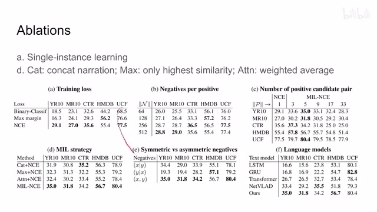
00:08:09–00:08:11 · 画面 01700:08:11–00:08:18 · 画面 018
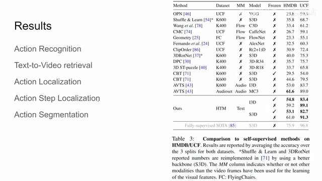
00:08:11–00:08:18 · 画面 01800:08:18–00:08:57 · 画面 019
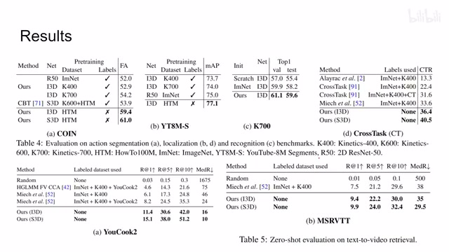
00:08:18–00:08:57 · 画面 019比如说 action segmentationaction localization，还有 video retrieval 等等，等等，感兴趣的朋友可以仔细到原文查看，总的来说这篇的实现并不复杂，就是利用时间上的相关性，就是一个 text 和 video，他们只要靠的比较近，我们都认为它是一个 positive sample，然后把它应用到了 nce 上变成了 MILMultiple Instance Learning，也就是我们有很多个 positive sample 的这么一个 NCE，然后来做的这么一个设计，我们介绍这篇论文呢还是为了布局后面的一篇，那么以上就是我对这个论文的一个快速的整理，那么感谢您的收看，再见
00:08:57–00:08:58 · 画面 020
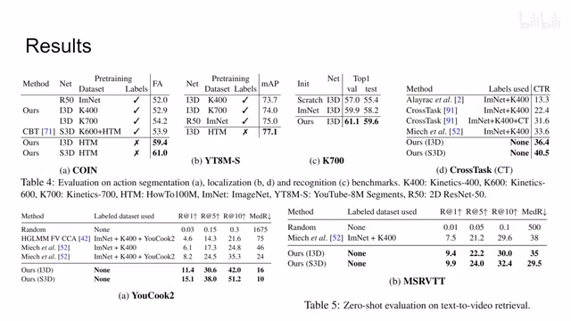
00:08:57–00:08:58 · 画面 020转写与来源说明 · 0 个自动复核提示
保留 22 个原始语音片段，0 个片段触发自动复核提示。提示仅用于定位可能的术语、重复或识别问题，不等于已确认错误。
讲解画面为源视频截图（640×360），不是可编辑 PPT 文件。全片按每秒 2 帧扫描内容变化，逐步展开页保留；连续动画保留代表画面。清晰度受源视频限制。
原视频：paper/合集_2026-10-16_多模态语言模型/[论文简析]End-to-End Learning... from Uncurated Instructional Videos[1912.06430].mp4
SHA-256：27eb1f4063da3de7a7d7033a400e2a8fb236f17c458009b8114f4920c84a5592
全文按视频语音与画面制作。原论文可从上方链接下载；完整资料包保留全文、原始逐字稿、字幕和校对记录。